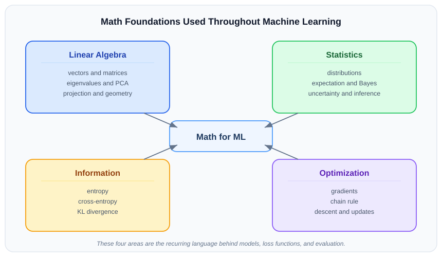

Explore this chapter with hands-on visualizations: Eigenvalues & PCA, Gradient Descent, Entropy & Information
ML is built on four areas of mathematics: linear algebra (the geometry of data), statistics and probability (uncertainty and inference), information theory (measuring surprise and divergence), and optimization (finding minima of loss functions). This chapter covers the essentials of each.
What you will learn:
| Section | Topic |
|---|---|
| 2.1 | Linear algebra: vectors, matrices, eigenvalues |
| 2.2 | Statistics foundations (connecting to PCA) |
| 2.3 | Entropy, cross-entropy, and KL divergence |
| 2.4 | Optimization basics: gradients, chain rule |
How to use this chapter: These foundations are referenced throughout the book. Read for understanding; return as a reference when you encounter the math in context.

Almost every ML algorithm — from linear regression to transformers — boils down to matrix multiplication. Before we dive into eigenvalues and PCA, let’s make sure the foundation is solid.
A matrix is just a grid of numbers. Matrix multiplication combines two grids to produce a third — and this single operation powers nearly everything in machine learning: predictions, gradient updates, attention scores, and more.
When you call model.predict(X), what actually happens is a matrix multiply: X · W. Every input gets multiplied by learned weights, summed, and passed forward. Understanding this operation — its shape rules, its cost, and its geometric meaning — unlocks the rest of linear algebra for ML.
The rule: To multiply matrix A (shape m × n) by matrix B (shape n × p), the inner dimensions must match. The result C has shape m × p.
Given 100 samples with 5 features, your data matrix X is (100 × 5) and your weight vector w is (5 × 1). The prediction ŷ = Xw is a single matrix multiply that produces (100 × 1) — one prediction per sample, computed all at once.
Where you’ll see this again: neural network layers (z = Wx + b), attention scores in transformers (QKT), covariance matrices (XTX), and PCA projections — all matrix multiplies at their core.
With multiplication in hand, we can now talk about what a matrix does to the space it operates on — which brings us to determinants and eigenvalues.
Before you can understand PCA, gradient descent, or most of ML’s geometry, you need two ideas from linear algebra: determinants and eigenvalues.
Think of a matrix as a transformation — it takes vectors and stretches, rotates, or squishes them. The determinant tells you whether the transformation is reversible (non-zero) or collapses space (zero). The eigenvectors are the special directions that only stretch — they don’t rotate. How much they stretch is the eigenvalue.
In PCA, the covariance matrix’s eigenvectors become your principal components, and the eigenvalues tell you how much variance each direction captures.
Key: Determinant = invertibility/volume scaling; eigenpairs = preserved directions + stretch.
| Term | Meaning |
|---|---|
| Determinant | Scalar for a square matrix; tests invertibility and volume scaling. |
| Eigenvector | Nonzero vector whose direction is unchanged by \(A\). |
| Eigenvalue | Scale factor \(\lambda\) in \(Ax=\lambda x\). |
| Identity matrix | \(I\): ones on diagonal, zeros elsewhere. |
| Characteristic equation | \(\det(A-\lambda I)=0\); roots are eigenvalues. |
| Non-trivial solution | Any solution other than \(x=0\). |
\[ \det(A) \neq 0 \iff A \text{ is invertible} \]
\[ Ax = \lambda x, \qquad x \neq 0 \]
For quadratic objectives:
\[ \nabla_x(x^T A x) = (A + A^T)x \]
Only if \(A\) is symmetric:
\[ \nabla_x(x^T A x)=2Ax \]
Scalar analogy:
\[ \frac{d}{dx}(kx^2)=2kx \]
Key: Use \(2Ax\) only when \(A=A^T\).
\[ |A| \]
| Matrix size | Formula |
|---|---|
| 2×2 | det([a b; c d]) = ad−bc |
| 3×3 | a(ei−fh) − b(di−fg) + c(dh−eg) |
| 4×4 | Cofactor expansion; alternating signs + − + − |
\[ A = \begin{bmatrix}a&b\\c&d\end{bmatrix} \quad \Rightarrow \quad \det(A) = ad - bc \]
\[ |A| = a(ei - fh) - b(di - fg) + c(dh - eg) \]
For \(4\times4\), first-row cofactor expansion:
\[ \left|A\right| = a\begin{vmatrix} f & g & h \\ j & k & l \\ n & o & p \end{vmatrix} - b\begin{vmatrix} e & g & h \\ i & k & l \\ m & o & p \end{vmatrix} + c\begin{vmatrix} e & f & h \\ i & j & l \\ m & n & p \end{vmatrix} - d\begin{vmatrix} e & f & g \\ i & j & k \\ m & n & o \end{vmatrix} \]
Key: \(\det(A)=0\) means singular, non-invertible, dimension collapse.
The core equation \(Ax = \lambda x\) says: vector \(x\) only scales (doesn’t rotate) under \(A\).
Rearranging to find \(\lambda\):
\[ (A - \lambda I)x = 0 \quad \Rightarrow \quad \det(A - \lambda I) = 0 \]
This characteristic equation is a polynomial in \(\lambda\). Its roots are the eigenvalues; plug each back in to find the corresponding eigenvector.
Key: Set \(\det(A-\lambda I)=0\) so \((A-\lambda I)x=0\) has a nonzero solution.
\[ A = \begin{bmatrix} 2 & 3 \\ 1 & 4 \end{bmatrix} \]
\[ |A| = (2)(4) - (3)(1) = 8 - 3 = 5 \]
Let
\[ A = \begin{bmatrix} 2 & 1 \\ 1 & 2 \end{bmatrix} \]
Characteristic equation:
\[ \det(A - \lambda I) = 0 \]
\[ A - \lambda I = \begin{bmatrix} 2 - \lambda & 1 \\ 1 & 2 - \lambda \end{bmatrix} \]
\[ \det(A - \lambda I) = (2 - \lambda)^2 - 1 \]
\[ (2 - \lambda)^2 - 1 = 0 \]
So:
\[ \lambda = 1,\; 3 \]
For \(\lambda=3\):
\[ (A - 3I)x = 0 \]
\[ \begin{bmatrix} -1 & 1 \\ 1 & -1 \end{bmatrix} \begin{bmatrix} x_1 \\ x_2 \end{bmatrix} = \begin{bmatrix} 0 \\ 0 \end{bmatrix} \]
\[ x_1=x_2 \]
One eigenvector:
\[ \begin{bmatrix} 1 \\ 1 \end{bmatrix} \]
For \(\lambda=1\):
\[ (A - I)x = 0 \]
\[ \begin{bmatrix} 1 & 1 \\ 1 & 1 \end{bmatrix} \begin{bmatrix} x_1 \\ x_2 \end{bmatrix} = \begin{bmatrix} 0 \\ 0 \end{bmatrix} \]
\[ x_1=-x_2 \]
One eigenvector:
\[ \begin{bmatrix} 1 \\ -1 \end{bmatrix} \]
Statistics and linear algebra don't live in separate boxes — they meet constantly in ML. Mean, variance, and covariance describe data; the covariance matrix is then processed with eigendecomposition (from linear algebra) to find the most important directions. This section gives you the core statistical quantities you'll need alongside the linear algebra from section 2.1.
Key: Statistics summarizes variation; linear algebra extracts dominant directions. PCA is the clearest example of both working together — but the full statistics toolkit is in Chapter 01.
| Statistic / LA term | Meaning |
|---|---|
| Mean | Center of values. |
| Std. deviation | Spread around mean. |
| Covariance | Joint movement of two variables. |
| Correlation | Scale-free covariance in \([-1,1]\). |
| Covariance matrix | Pairwise covariances across features. |
\[ \bar{x}=\frac{1}{n}\sum_{i=1}^{n}x_i \]
\[ \sigma_x=\sqrt{\frac{1}{n}\sum_{i=1}^{n}(x_i-\bar{x})^2} \]
\[ s_x=\sqrt{\frac{1}{n-1}\sum_{i=1}^{n}(x_i-\bar{x})^2} \]
\[ \mathrm{Cov}(x,y)=\frac{1}{n}\sum_{i=1}^{n}(x_i-\bar{x})(y_i-\bar{y}) \]
\[ \mathrm{Cov}(x,y)=\frac{1}{n-1}\sum_{i=1}^{n}(x_i-\bar{x})(y_i-\bar{y}) \]
\[ \mathrm{Corr}(x,y)=\frac{\mathrm{Cov}(x,y)}{\sigma_x\sigma_y} \]
| Quantity | Interpretation |
|---|---|
| Mean | center |
| Std. dev. | spread |
| Covariance | co-movement, scale-dependent |
| Correlation | co-movement, normalized |
Key: Use correlation for scale-free comparison; covariance keeps units.
Reported values:
Interpretation:
Entropy, cross-entropy, and KL divergence are the
information-theoretic foundation behind most classification training
objectives. If you’ve used categorical_crossentropy as a
loss function — which you almost certainly have — you’ve already been
using these concepts.
Here’s the intuition before the formulas:
Convention: \(q(y)\) = true/data distribution · \(p(y)\) = model/predicted distribution · \(\log\) = natural log (nats) in ML
| H(q) | Entropy | uncertainty in true distribution q |
| H(q,p) | Cross-Entropy H(q) + extra bits from using model p | |
| D_KL(q||p) KL Divergence H(q,p) − H(q) ← mismatch penalty only | ||
| Minimize H(q,p) ≡ Minimize D_KL(q||p) | (since H(q) is fixed) |
Key: For fixed \(q\), minimizing cross-entropy = minimizing D_KL(q||p).
| Quantity | Uses | Meaning |
|---|---|---|
| Entropy \(H(q)\) | 1 distribution | uncertainty in truth |
| Cross-Entropy \(H(q,p)\) | 2 distributions | loss of using \(p\) for data from \(q\) |
| KL divergence D_KL(q | p) |
Cross-entropy is standard for classification, LM, next-token prediction.
\[ H(q) = -\sum_i q_i \log(q_i) \]
General class form:
\[ H(q) = -\sum_{c=1}^{C} q(y_c) \cdot \log(q(y_c)) \]
Binary max-uncertainty case:
\[ H(q) = \log(2) \]
| Distribution | Entropy |
|---|---|
| \([0.99, 0.01]\) | Low |
| \([0.9, 0.1]\) | Low |
| \([0.5, 0.5]\) | Max (binary) |
Examples:
\[ H([0.9,0.1]) = -[0.9\log(0.9)+0.1\log(0.1)] \approx 0.3251 \]
\[ H([0.5,0.5]) = \log(2) \approx 0.6931 \]
Key: Binary entropy is maximized at \(p=0.5\).
\[ H(q,p) = -\sum_i q_i \log p_i \]
\[ -\sum_{c=1}^C q(y_c)\log p(y_c) \]
For one-hot labels:
\[ H(q,p) = -\log p(y_{\text{true}}) \]
| p(correct class) | 0.99 | 0.9 | 0.5 | 0.1 | 0.01 |
|---|---|---|---|---|---|
| loss = −log(p) | 0.01 | 0.11 | 0.69 | 2.30 | 4.61 |
The model is heavily penalized for being confidently wrong.
Examples:
Key: Cross-entropy rewards calibrated confidence and punishes tiny probability on the true class.
\[ D_{KL}(q\|p)=\sum_i q_i \log \frac{q_i}{p_i} \]
\[ D_{KL}(q\|p)=H(q,p)-H(q) \]
Properties:
Mental model: - Entropy = unavoidable uncertainty - KL = avoidable waste from bad predictions
Key: KL is not a true distance.
For one-hot multiclass:
\[ L = -\log p(y_{\text{true}}) \]
Binary classification:
\[ -[y\log \hat p + (1-y)\log(1-\hat p)] \]
Dataset BCE:
\[ \text{BCE} = -\frac{1}{N} \sum_{i=1}^{N} \left[ y_i \log(\hat{p}_i) + (1-y_i)\log(1-\hat{p}_i) \right] \]
Case-wise:
Why not accuracy?
Key: BCE/log loss is the probabilistic training objective; accuracy is mainly an eval metric.
Softmax converts logits to probabilities:
\[ \text{softmax}(z_i) = \frac{\exp(z_i)}{\sum_j \exp(z_j)} \]
Let:
\[ q = [0.8, 0.2], \qquad p = [0.6, 0.4] \]
Entropy:
\[ H(q) = -[0.8\log(0.8) + 0.2\log(0.2)] \approx 0.5004 \]
Cross-entropy:
\[ H(q,p) = -[0.8\log(0.6) + 0.2\log(0.4)] \approx 0.5919 \]
KL:
\[ D_{KL}(q\|p) = 0.8\log\frac{0.8}{0.6} + 0.2\log\frac{0.2}{0.4} \approx 0.0915 \]
Check:
\[ H(q) + D_{KL}(q\|p) \approx 0.5004 + 0.0915 = 0.5919 = H(q,p) \]
| Pitfall | Fix |
|---|---|
| Mixing up \(q\) and \(p\) | \(q\) = true, \(p\) = predicted |
| Treating entropy = cross-entropy | Entropy uses 1 distribution; cross-entropy uses 2 |
| Forgetting log base | base-2 = bits, natural log = nats |
| Assuming KL is a distance | not symmetric |
| Using \(p_i=0\) where \(q_i>0\) | CE/KL blow up |
Also:
Standard deviation = spread around mean.
\[ \sigma = \sqrt{\mathbb{E}[(X-\mu)^2]} \]
For a sample:
\[ s = \sqrt{\frac{1}{n-1}\sum_{i=1}^{n}(x_i-\bar{x})^2} \]
Expectation = probability-weighted average.
For discrete:
\[ \mathbb{E}[X] = \sum_x x \, p(x) \]
For continuous:
\[ \mathbb{E}[X] = \int x f(x)\,dx \]
Training minimizes expected loss over the data distribution.
| Entropy | uncertainty in q |
| Cross-Entropy | fit of p to q |
| KL Divergence | mismatch = Cross-Entropy − Entropy |
| Softmax | logits → probabilities |
Key: In supervised classification, the practical loss is usually just “negative log-probability of the true class.”
Training a model means finding parameters that minimize a loss function. Optimization is the engine that does this.
The core update rule for nearly all ML training:
\[ \theta \leftarrow \theta - \eta \cdot \nabla_{\theta} L(\theta) \]
| Variant | Update frequency | Pros | Cons |
|---|---|---|---|
| Batch GD | Once per full dataset | Stable, smooth | Slow on large data |
| Stochastic GD (SGD) | Once per single example | Fast, noisy updates escape local minima | Noisy, needs tuning |
| Mini-batch GD | Once per batch (e.g. 32–256) | Best of both — most used in practice | Batch size is a hyperparameter |
Key: Mini-batch gradient descent is the default in virtually all deep learning frameworks.
| Variant | Batch size | Speed/epoch | Noise | Typical use |
| Batch GD | All data | Slow | Low | Small datasets |
| Stochastic GD | 1 sample | Fast | High | Online learning |
| Mini-batch GD | 32-512 | Balanced | Medium | ★ Production default |
Plain gradient descent can oscillate in narrow valleys. Momentum adds a velocity term that accumulates past gradients:
\[ v \leftarrow \beta v + \nabla L, \qquad \theta \leftarrow \theta - \eta v \]
Where: \(v\) = velocity (accumulated gradient), \(\beta\) = momentum coefficient (typically 0.9), \(\nabla L\) = gradient of loss, \(\eta\) = learning rate.
Think of it as a ball rolling downhill — it builds up speed in consistent directions and dampens oscillation.
Adam is the most widely-used optimizer. It combines momentum with adaptive learning rates per parameter:
\[ m_t = \beta_1 m_{t-1} + (1 - \beta_1) g_t \qquad \text{(first moment)} \] \[ v_t = \beta_2 v_{t-1} + (1 - \beta_2) g_t^2 \qquad \text{(second moment)} \] \[ \theta \leftarrow \theta - \frac{\eta}{\sqrt{\hat{v}_t} + \epsilon} \hat{m}_t \]
Where: \(g_t\) = gradient at step \(t\), \(m_t\) = first moment estimate (momentum), \(v_t\) = second moment estimate (adaptive scaling), \(\hat{m}_t, \hat{v}_t\) = bias-corrected estimates, \(\beta_1, \beta_2\) = exponential decay rates (typically 0.9, 0.999), \(\eta\) = learning rate, \(\epsilon\) = small constant for numerical stability.
In practice: start with Adam, defaults usually work (lr=0.001, beta1=0.9, beta2=0.999).
| Parameter | Value | Role |
|---|---|---|
| lr | 0.001 | learning rate (step size) |
| b1 | 0.9 | momentum decay (first moment) |
| b2 | 0.999 | RMS decay (second moment) |
| eps | 1e-8 | numerical stability term |
Bias correction: m̂ = m/(1−b1ᵗ), v̂ = v/(1−b2ᵗ) — important in early steps when m, v are near zero.
A fixed learning rate is rarely optimal. Common schedules:
| Schedule | Behavior | When to use |
|---|---|---|
| Step decay | Divide lr by factor every N epochs | Simple, effective |
| Cosine annealing | Smooth decay following cosine curve | Long training runs |
| Warmup + decay | Start small, ramp up, then decay | Transformers, large models |
Key: For neural networks, worry about learning rate and convergence speed more than local minima — they rarely cause real problems in high dimensions.
optimizer.zero_grad())